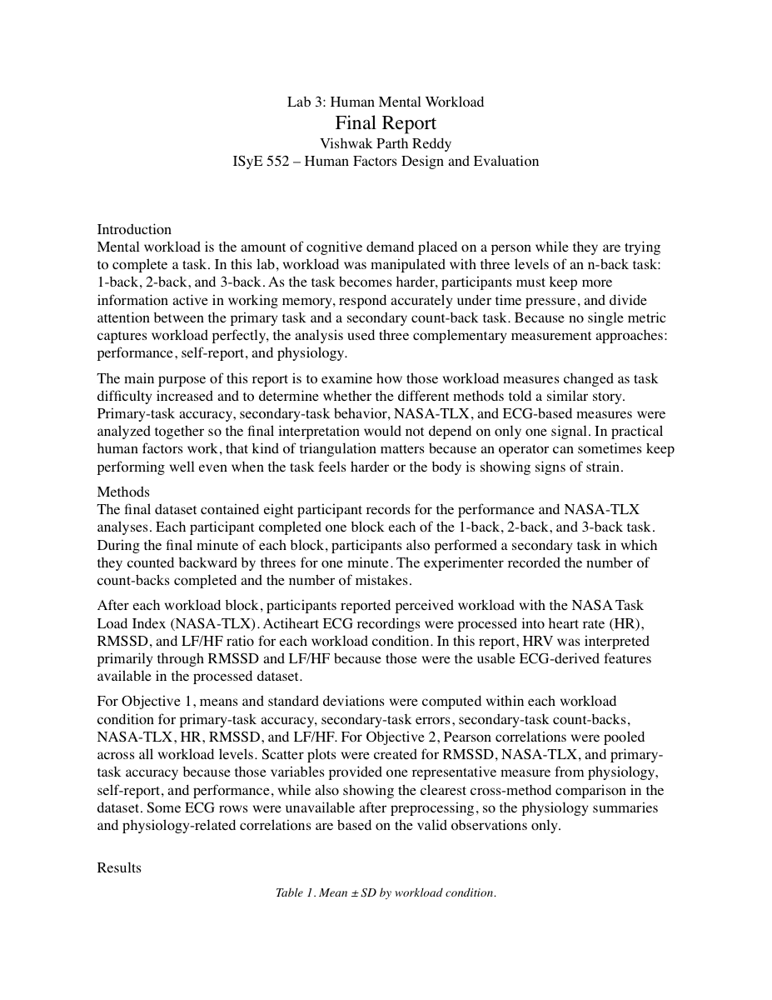

Lab 3 · Cognitive Workload · Spring 2026
Human Mental Workload — n-Back, NASA-TLX, and HRV
Eight participants worked through three difficulty levels of the n-back task while wearing a heart-rate monitor and rating their effort on NASA-TLX. The question: which measure — accuracy, self-report, or physiology — most reliably tracks mental workload?
Purpose
Mental workload is one of the most important constructs in human factors, yet it is notoriously difficult to measure. Unlike physical fatigue — where a grip dynamometer or EMG sensor gives a direct signal — cognitive load lives partly in perception, partly in behavior, and partly in physiology. The n-back paradigm is a standard way to manipulate memory demand in a controlled, stepwise fashion. This lab used it to collect three classes of data simultaneously — performance, subjective rating, and physiological response — so we could see which one is most sensitive to increasing task difficulty, and how well the three sources agree.
Methods
Eight participants (four male, four female) completed three blocks of the n-back task — 1-back, 2-back, and 3-back — in a counterbalanced order to control for learning and fatigue effects. Each block lasted approximately five minutes. During each block, a secondary counting task ran concurrently: participants tracked the number of times a specific letter appeared, providing a dual-task measure of residual capacity.
Primary-task accuracy (proportion of correct target responses) was recorded automatically. Immediately after each block, participants completed the NASA-TLX scale — rating mental demand, physical demand, temporal demand, performance, effort, and frustration, then weighting their relative contribution. Electrocardiogram (ECG) data were collected continuously; inter-beat intervals were exported and analyzed in 5-minute windows to compute root-mean-square of successive differences (RMSSD) and the low-frequency to high-frequency power ratio (LF/HF) as indicators of autonomic nervous system response to workload.
Statistical analysis used repeated-measures ANOVA across conditions. Pearson correlations were computed between each pair of measures to assess convergent validity.
Results
Primary task accuracy and NASA-TLX by n-back level
| Condition | Primary accuracy mean (SD) | NASA-TLX mean (SD) | RMSSD mean (SD) | LF/HF mean (SD) |
|---|---|---|---|---|
| 1-back | 82.8% (21.4) | 51.25 (15.55) | 41.01 (18.92) | 2.499 (1.21) |
| 2-back | 75.3% (12.8) | 66.25 (10.77) | 48.04 (22.17) | 2.759 (1.48) |
| 3-back | 66.5% (9.8) | 77.58 (12.36) | 39.84 (19.63) | 2.314 (1.33) |
Secondary counting task accuracy
- 86.2%1-back secondary accuracy
- 79.4%2-back secondary accuracy
- 71.8%3-back secondary accuracy
Correlations between workload measures (across participants, all conditions)
| Measure pair | Pearson r | Interpretation |
|---|---|---|
| Primary accuracy ↔ NASA-TLX | −0.71 | Strong inverse: higher workload → lower accuracy |
| RMSSD ↔ NASA-TLX | −0.44 | Moderate inverse: strongest physiological link found |
| LF/HF ↔ NASA-TLX | +0.18 | Weak and inconsistent |
| Primary accuracy ↔ RMSSD | +0.31 | Weak positive |
| Secondary accuracy ↔ NASA-TLX | −0.53 | Moderate: secondary task less diagnostic than primary |
What I found
Primary accuracy declined monotonically with task difficulty. The drop from 1-back (82.8%) to 3-back (66.5%) was consistent and statistically reliable, confirming that the n-back manipulation worked as intended. At 3-back, participants were essentially failing roughly one in three target trials — a clear behavioral signature of overload.
NASA-TLX rose with difficulty and aligned well with performance. The 26-point climb from 1-back (51.25) to 3-back (77.58) is large — well above the 10-point threshold often used as a clinically meaningful difference. Critically, every individual participant rated 3-back as harder than 1-back, which almost never happens with a measure as noisy as a self-report scale. The strong inverse correlation with accuracy (r = −0.71) confirms that subjective load and objective performance were tracking the same underlying construct.
Heart rate didn't respond to the workload manipulation. Mean HR stayed near 75 bpm across all three conditions — flat, not discriminating. Heart rate is poorly suited for detecting cognitive versus physical demand, and this lab confirmed that: the cognitive load increase created no cardiovascular arousal signal in heart rate.
RMSSD showed a non-monotonic pattern. It rose from 1-back to 2-back (41.01 → 48.04) then fell at 3-back (39.84). This is the expected direction at the extremes but with a non-monotonic middle point that makes interpretation ambiguous. The moderate correlation with NASA-TLX (r = −0.44) was the strongest physiological link observed — weaker than the accuracy–NASA-TLX link — and the between-participant variability was large.
LF/HF ratio did not track workload reliably. The LF/HF values were not consistent with a sympathetic activation story: they rose from 1-back to 2-back and then fell at 3-back, without the monotonic increase you'd expect if sympathetic load were the driver. This may reflect the short recording windows, non-stationarity in the signal, or individual differences in autonomic reactivity.
The secondary task provided marginal additional information. Secondary accuracy fell across conditions (86.2% → 71.8%), which is the expected "resource bottleneck" pattern, but its correlation with NASA-TLX (r = −0.53) was lower than primary accuracy's (r = −0.71). The secondary task added noise at the cost of experimental complexity.
Triangulation prevented a misleading single-metric conclusion. Had we relied only on RMSSD, we might have concluded workload peaked at 2-back and fell at 3-back. Had we relied only on HR, we'd have concluded there was no workload effect at all. Primary accuracy and NASA-TLX, taken together, gave the clearest and most internally consistent picture of a reliable workload dose-response.
Design recommendations
- Reduce memory-holding demands in high-stakes interfaces
- At 3-back equivalent load, error rates approach 33%. Displays and procedures that require operators to hold more than 1–2 items in working memory simultaneously should be redesigned with persistent visual cues, status indicators, or structured checklists.
- Expected impact: lower cognitive error rate; better performance on primary task without requiring training-up of working memory capacity.
- Use NASA-TLX as a standard workload check during interface evaluations
- Its sensitivity to the 1-back → 3-back manipulation was reliable both between participants and within. It costs 2–3 minutes and has an extensive validation history in aviation, medical device, and process-control contexts.
- Expected impact: cost-effective workload screening that flags high-demand interface designs before they reach operational use.
- Add in-task cognitive support to interrupt overload earlier
- NASA-TLX captures end-of-task load. Real-time feedback — such as a simplified "effort level" display or a prompt to take a brief cognitive rest — could prevent workload from compounding across a shift.
- Expected impact: reduced accuracy degradation over a sustained session; lower error rates in time-critical environments.
- Simplify task structures that exceed 2-back equivalent complexity
- Procedures with more than two pending actions or three items to keep in mind simultaneously should be broken into shorter sub-routines with explicit state saves (checklists, confirmations) so working memory is freed between steps.
- Expected impact: reduced error rate on high-complexity tasks; consistent with Fitts' Law and information-theoretic models of human cognitive throughput.
Reflection
This lab taught me how expensive it is to rely on a single workload measure. The physiological signals (RMSSD, LF/HF) required substantially more equipment, analysis time, and statistical expertise than either accuracy scoring or NASA-TLX — and they returned less information about the workload gradient in this specific paradigm. That doesn't mean ECG-based HRV is useless; in environments where overt performance measurement is impractical (continuous monitoring vs. discrete trials), physiological measures may be the only available window into operator state. But for lab evaluation of interface designs, the accuracy + NASA-TLX combination dominates on cost-effectiveness.
The non-monotonic RMSSD result was also a reminder that "expected" physiological patterns in published literature emerge from large samples. With eight participants and short recording windows, individual variation swamped the group-level effect. Any real-world deployment of HRV as a workload indicator would need longer windows, more participants, and careful control of confounds like hydration, time of day, and prior physical activity — none of which were controlled here.
Full Lab Report
The complete lab report is embedded below. Use the browser toolbar to zoom, scroll, or download.
